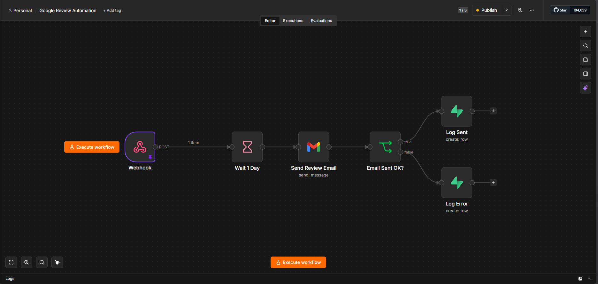
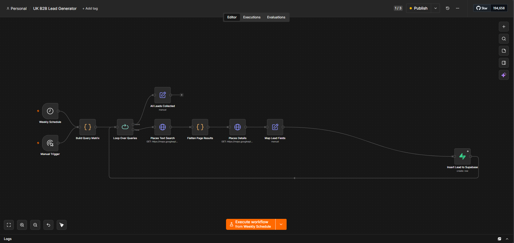
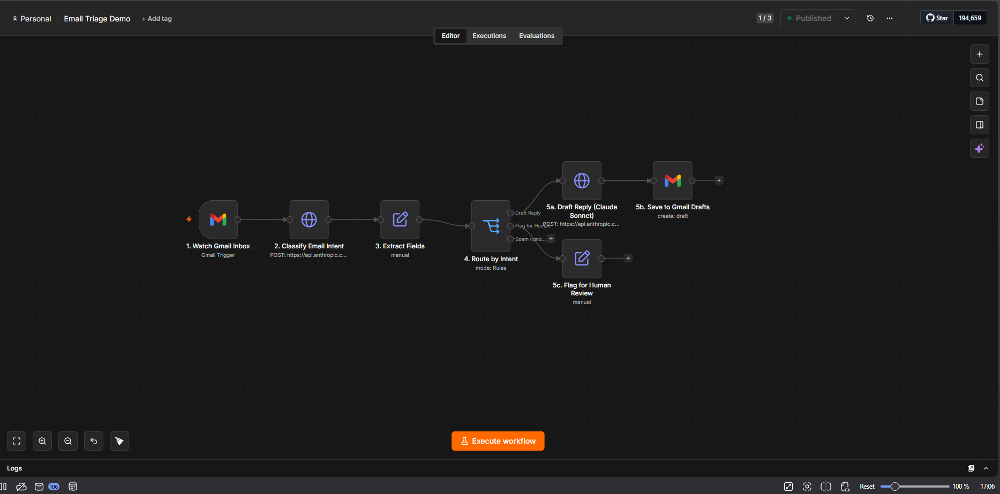
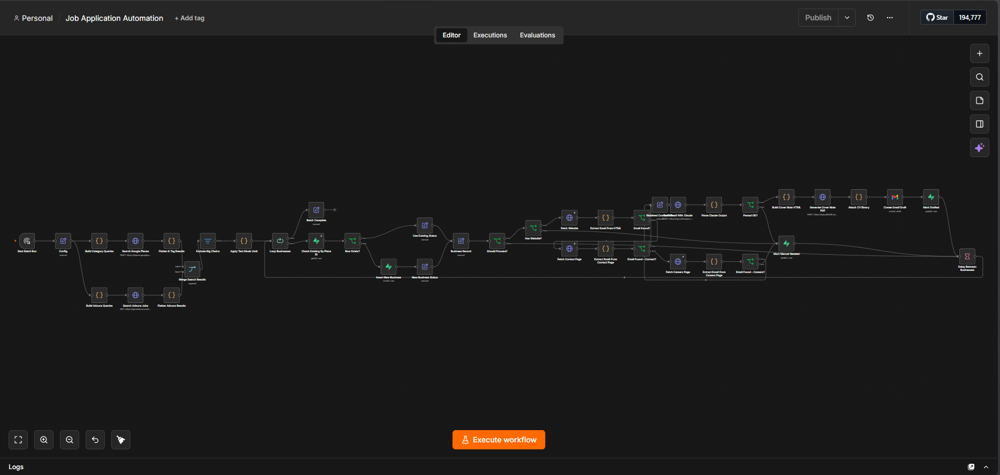

AI Automation • Software Engineering
AI-Focused
Technologist
I am an early-career technologist with hands-on experience in AI automation, workflow engineering and software development.
The Premise
Every business runs on repetitive work.
An enquiry arrives and waits for someone to notice it. A reply gets typed for the hundredth time. Records get copied out of one tool and into another that never learned to talk to it.
None of it is difficult. That's the problem — it's easy, it's endless, and it quietly eats the hours meant for the actual work.
So the question I start with is a simple one: which of this should a person still be doing?
What follows is how I answer it — the process, and the systems it builds.
Discovery
First, we talk.
We talk through your current processes, pain points, and goals. I identify where automation can save you the most time.
Design
Then I map the system.
I map out the automation architecture — tools, triggers, logic, and integrations — and walk you through the plan before building anything.
Build
Then I build it.
I build and test the workflow end-to-end, handling edge cases and making sure everything runs reliably.
Handover
Yours to keep. I'm Shayaan.
I hand over the finished system with documentation so you can understand and maintain it — or I can manage it ongoing.
Services
From one-off integrations to fully managed automation systems.
Workflow Automation
Eliminate repetitive tasks by connecting your tools and automating multi-step processes. Whether it's syncing data between platforms, triggering actions based on events, or scheduling recurring jobs — I design and build workflows that run without you.
AI Chatbots
Custom AI chatbots trained on your data and integrated into your website, app, or internal tools. From customer support bots to knowledge base assistants, I build chatbots that actually understand context and give useful answers.
n8n & Make Integrations
Specialist in building and deploying complex automation flows on n8n and Make (formerly Integromat). I can self-host n8n for you, migrate existing workflows, or build from scratch — connecting CRMs, databases, communication tools, and more.
AI-Powered Data Pipelines
Automate the collection, processing, and routing of data using AI. Scrape, transform, classify, and summarise information — then push it wherever it needs to go, on a schedule or in real time.
CRM Integration & Database Setup
I connect your automations to the right data layer — whether that's setting up a Supabase database from scratch, integrating with an existing CRM, or building custom pipelines that keep your records accurate and up to date automatically. No more copy-pasting between tools or manually updating spreadsheets.
Featured Work
Example automations built for businesses across different industries.
Premier Properties
An end-to-end AI automation built for a local estate agent. When a new enquiry comes in, the system automatically qualifies the lead, sends a personalised response, and logs the contact — removing the need for manual follow-up and ensuring no enquiry goes unanswered.
Spark Pro Electrical
A job intake and response automation built for a licensed electrical contractor. New job requests trigger an instant AI-generated reply, with job details automatically captured and routed to the right place — saving hours of admin per week.
Workflow Examples
A look at some of the n8n automation workflows I've built.

Google Review Automation
Triggered via webhook when a job is completed, this workflow waits one day then automatically sends a personalised review request email to the customer via Gmail. It checks whether the email sent successfully and logs the outcome — either confirmed or errored — into a tracking sheet for full visibility.

UK B2B Lead Generator
Runs on a weekly schedule (or manually) to automatically scrape business leads from Google Places using a set of search queries. It loops through each query, pulls detailed business information, maps the fields into a clean format, and inserts each lead directly into a Supabase database — ready for outreach without any manual searching.

AI Email Triage
An AI-powered inbox automation that reads incoming emails, classifies them by urgency and type, and routes them automatically — urgent messages get flagged immediately, routine enquiries get drafted responses, and irrelevant emails are filtered out. Eliminates hours of inbox management for busy teams.

Job Application Automation
A fully automated job hunting pipeline built in n8n. It searches Google Places and Adzuna simultaneously, merges and deduplicates results, loops through each business, scrapes their website to find a contact email, and uses Claude AI to generate a personalised cover note and CV before creating a Gmail draft — ready to send with one click. Users have seen 100+ potential job application leads generated in a single run, turning a process that would take days of manual effort into something that runs in minutes.
Selected Projects
Selected technical projects focused on web development, automation, AI workflows, and practical software systems.
BrawlBase — Full-Stack Martial Arts Search Platform
Tech: Python, Flask, SQLAlchemy, HTML/CSS
Built a web platform connecting martial artists with training partners, gyms, coaches, and sports professionals. Features included registration, login, password hashing, sessions, user profiles, filtered search, service directories, messaging, and relational data models.
Who's behind it
Driven early-career technologist with hands-on experience in AI automation, workflow engineering, and software development.
Personal Statement
Driven and personable individual with strong leadership qualities and a passion for teamwork. Effective communicator who stays calm under pressure and multitasks confidently, built through part-time work, volunteering and competitive sport. Committed to delivering results efficiently and supporting those around me.
Off the clock
The habits behind the work.
Most of what I bring to the work was built somewhere other than a keyboard.
Mixed martial arts since 2021 — wrestling, kickboxing, jiu-jitsu, boxing — for discipline, resilience and self-control. Regular gym training since 2024, plus an interest in philosophy and theology: consistency and critical thinking, practised.
-
Mixed Martial Arts
2021 – present
Wrestling, kickboxing, jiu-jitsu, boxing — discipline, resilience and self-control.
-
Gym
2024 – present
Regular training — consistency.
-
Philosophy & Theology
Interest
Critical thinking.
Get in touch
Let's Connect
Open to opportunities, projects, collaborations and technical work.
Contact Me